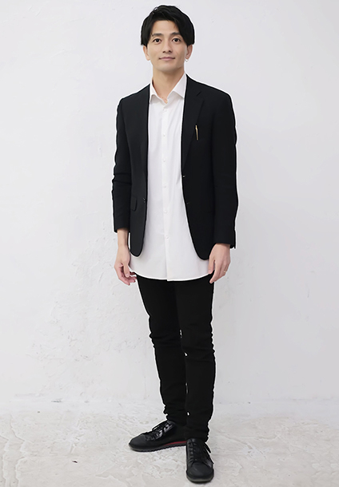

PROFILE
MCニシガキ



MCニシガキMC Nishigaki
| カテゴリ | MC/司会、講師、役者、モデル |
|---|---|
| 地域 | 関東 |
| 身長 | 170cm |
| 趣味 | 登山、懸垂、スパ、漫画 |
| 特技 | テニス、コーチング |
| 資格 | チャイルドコーチングマイスター
メンタルトレーニングスペシャリスト 漢検2級 アンガーバランス・マネジメント マインドフルネスコンサルタント マナーインストラクター コミュニケーションスキル JSADA認定コーチングプロフェッショナル キャリアカウンセラー ウェディングアドバイザー |
| 参考URL | |
| SNS |
経歴
【表彰式/記者発表/式典】
- パナソニックコネクト「レッツノート」新モデル発表会
- タグ・ホイヤー フォーミュラ1×マリオカート リミテッドエディション発表会
- CHRISTIAN ROLAND Xmas LIMITED STORE（ROLAND、當間ローズ）
- ベストフォーマルウェアアワード
- 「BTPN Blocnchain Meet up」品川GOOS
- 本田孝保 東久邇宮記念賞受賞パーティー
- ジュピタープロジェクト ミートアップ in 東京
- 車メーカー リーダーズコンベンション表彰式
【展示会/イベント/フェス/リポート】
- PRADAイベント
- LOEWEイベント
- タカラトミー商談会ゲーム実況
- BDSバイクセンサー真夏の祭典（くっきー！）
- InterBEE/パナソニック
- 染谷俊之さん×Dermalogica インスタライブ
- NHK土曜ドラマ「スニッファー 嗅覚捜査官」広報イベント
- 河村隆一さん所属グループ「Tourbillon 」NEWアルバムリリーストークイベント
- Belle epoque LIVE 2021
- May J.×ROUND1_全国カラオケイベント in 静岡
- 東京ゲームショウ/グリー
- 東京おもちゃショー/タカラトミーチャンネル生放送
- テレビ朝日系列BREAK OUT祭 ～POP-UP GaLLeRY～
- バブルラン大阪
- スポーツ博覧会東京 よしもと芸人と一緒に！大人が楽しむ運動会
- マイナビ主催「JOL*fes」
- 日本財団主催 海と日本PROJECT「未来の海の運動会」
- 未来の運動会シリーズ（東京、大阪、京都、山口）
- WE COLLECTION OSAKA in Zepp
- 三十路祭りin 名古屋
- ビキニフェス
- テレビ神奈川、テレビ埼玉 音楽番組「夢かなえるまで2」公開収録ライブ
【cm/VP】
- 新菱冷熱工業WEB cm
- JA全農みやぎ「だて正夢」TVcm
- Jackery Japan商品紹介動画ナビゲーター
- Saffe顔認証システム「スマートグラス」使用例 吉田太郎役
- JVC「Everio R」基本機能総合編 父役
- 「いろはす」cm
- 「白鶴丸」cm
- 「ドロリッチ」cm
- 「アリナミンA」cm
【映画】
- 「わが母の記」
- 「海猿 BRAVE HEARTS」
- 「ボクたちの交換日記」
【TVドラマ】
- 「謎解きはディナーのあとで」
- 「ストロベリーナイト」
- 「パパドル」
- 「37歳で医者になった僕～研修医純情物語～」
- 「TOKYOエアポート～東京空港管制保安部～」
- 「嬢王3～Special Edition～」
- 「ビギナーズ!」
- 「土俵ガール」
- 「大切なことはすべて君が教えてくれた」
- 「早海さんと呼ばれる日」
- 「絶対零度～特殊犯罪潜入操作～」
- 「陽はまた昇る」
- 「CONTROL～犯罪心理操作～」
- 「ハンチョウ～神南署安積班」
- 「それでも、生きてゆく」
- 「HUNTER～その女たち、賞金稼ぎ～」
- 「最後から二番目の恋」
- 「Wの悲劇」
- 「最後の晩餐」
- 「世にも奇妙な物語」
- 「花ざかりのきみたちへ～イケメン☆パラダイス2011」
- 「主に泣いています」
- 「もう一度君に、プロポーズ」
- 「特命戦隊ゴーバスターズ」
- 「非公認戦隊アキバレンジャー」
- 「クロヒョウ2」
- 「造花の蜜」
【TVバラエティ】
- 日本テレビ「踊る！さんま御殿!!」再現VTR
- 日本テレビ「愛され女と独身有田」
【モデル】
- nano universe セットアップスーツ「ダメリーノ」モデル
- テニスウェアメーカー「röche」カタログモデル
- ヤーマン株式会社「メンズ美容機器」モデル
- 横井定株式会社マスクAIモデル
【その他】
- 披露宴 年間30本
- イベント 年間150本
- セミナー、芸能スクール講師 年間50本